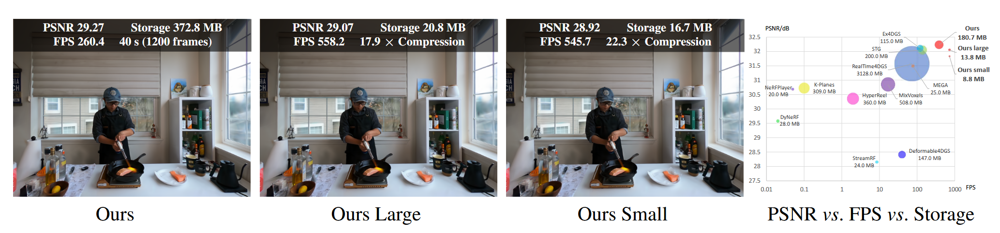
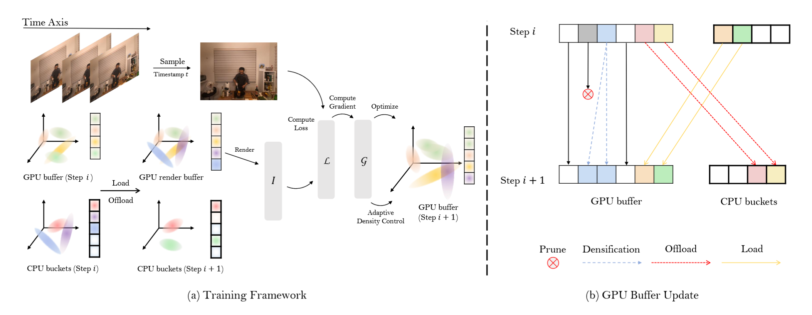
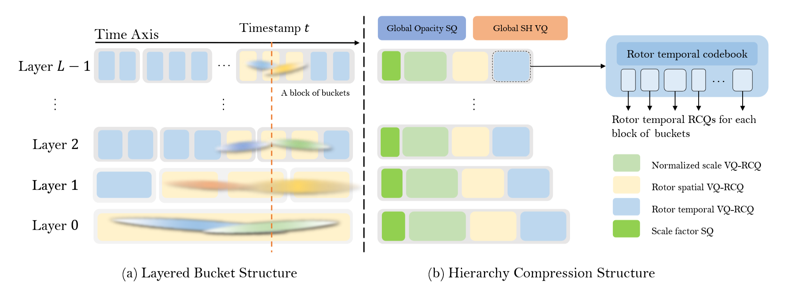

We consider the problem of reconstructing long dynamic scenes from multi-view videos in a storage-efficient manner. Recent advances in Gaussian Splatting and its extensions to dynamic scenes have demonstrated impressive visual quality, but remain limited to short duration (<10 s), large storage size (>500 MB), and high GPU VRAM usage. To overcome these limitations, we introduce Layered 4D-Rotor Gaussian Splatting, a novel compressed representation designed for long dynamic scenes. Our approach integrates a layered 4D representation, efficient training, and effective compression into a unified framework. Specifically, 4D Gaussians are first organized into layers based on their temporal extents and then partitioned into discrete temporal buckets. This structure allows for selective access and rendering of only the necessary subsets of 4D Gaussians, substantially reducing GPU memory requirements. To further compress the representation, we apply a series of techniques, Factorized Covariance Quantization, Layered Compression, and Residual Codebook Quantization, achieving a compression ratio of up to 22.3× while preserving high visual fidelity. We implement a highly optimized C++/CUDA framework for efficient training, compression, and real-time rendering, achieving over 500 FPS on an RTX 3090 GPU. Extensive experiments demonstrate the superior storage efficiency, visual quality, and rendering speed of our method, consistently outperforming prior methods in both quantitative metrics and perceptual quality on real-world long dynamic scenes.

To train massive, long-duration dynamic scenes without exceeding GPU memory limits, we propose a highly efficient Triple-Buffer Training Framework comprising a CPU bucket buffer and a GPU double buffer. During each training iteration, gradient updates and adaptive density control (i.e., splitting and cloning) are performed exclusively on the active subset of 4D Gaussians currently residing in the GPU render buffer. At the end of each step, a data transfer occurs: newly visible Gaussians are loaded from the CPU, while those unused for several steps are offloaded. Crucially, to completely bypass the severe latency caused by dynamic memory allocation (cudaMalloc) during these continuous transfers, our framework smoothly alternates between the two GPU buffers. Furthermore, to stabilize the optimization of static background regions across thousands of frames, we introduce a Dynamic-Aware Rotor Learning Rate (DARLR), which adaptively scales the temporal rotor learning rate based on each Gaussian's temporal extent.

To efficiently manage and compress highly dynamic long videos, we organize 4D Gaussians into a hierarchical layer-bucket structure, dynamically assigning each primitive based on its temporal scale τ and mean time t to prevent artificial time-clipping. During rendering, we only need to load the current bucket alongside its two immediate neighbors per layer. To achieve extreme storage reduction, we compress this massive representation using a tailored Vector Quantization pipeline. Since direct quantization of 4D covariances fails due to their massive dynamic range, we introduce Factorized Covariance Quantization (FCQ) to decouple the spatial and temporal components of scales and rotors before applying VQ. We then utilize layer-wise VQ to accommodate the vastly different data distributions across temporal levels, and finally employ Residual Codebook Quantization (RCQ)—learning a lightweight residual codebook to refine a global base—to capture high-frequency visual details with virtually no additional storage overhead.
@misc{xu2025layered4drotor,
title = {Layered {4D}-Rotor Gaussian Splatting: A Compressed Representation for Long Dynamic Scenes},
author = {Xu, Hanjie and Duan, Yuanxing and Dai, Qiyu and Li, Ge and Chen, Baoquan and Wang, He},
year = {2026},
note = {Manuscript in preparation; arXiv link to be added},
}